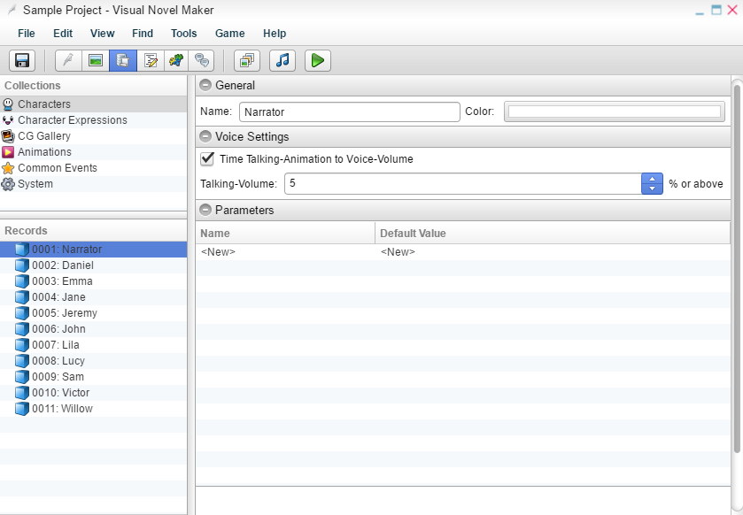

角色

通用
名称- 角色的名称。
颜色- 在 Novel (NVL) 模式下，消息文本将以您在此处分配的颜色显示。在 Adventure (ADV) 模式下，只有角色的名称将以该颜色显示。
语音设置
说话动画与语音音量同步- 如果启用，则说话动画将根据语音片段的音量进行同步。
对于 Live2D 模型，嘴巴的宽度取决于语音音量。
Live2D 设置
唇形同步灵敏度 - 百分比越高，角色的张嘴程度受语音音量影响越大。如果指定 0.0%，则禁用唇形同步。
呼吸强度- 呼吸动画的强度。如果指定 0.0%，则禁用呼吸。
空闲强度- 空闲动画的强度。如果指定 0.0%，则禁用默认的空闲动画。
参数是仅对指定角色存在的局部数字、开关或文本值。运行时可以使用“设置参数”和“获取参数”场景命令来访问它们。
名称- 参数的名称。
数字- 定义一个数字值作为参数。如果您想为角色添加生命模拟游戏的统计数据，这将非常有用。
开关- 定义一个开关值作为参数。
文本- 定义一个文本值作为参数。